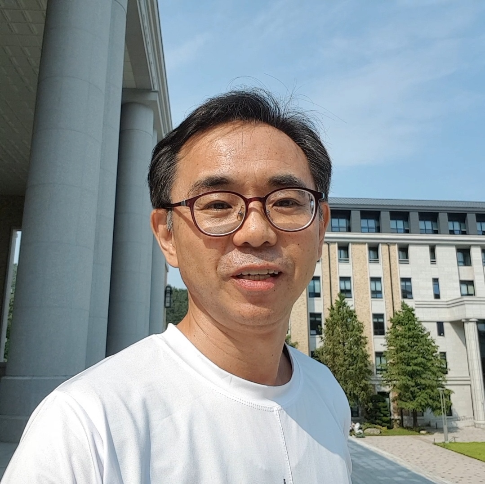
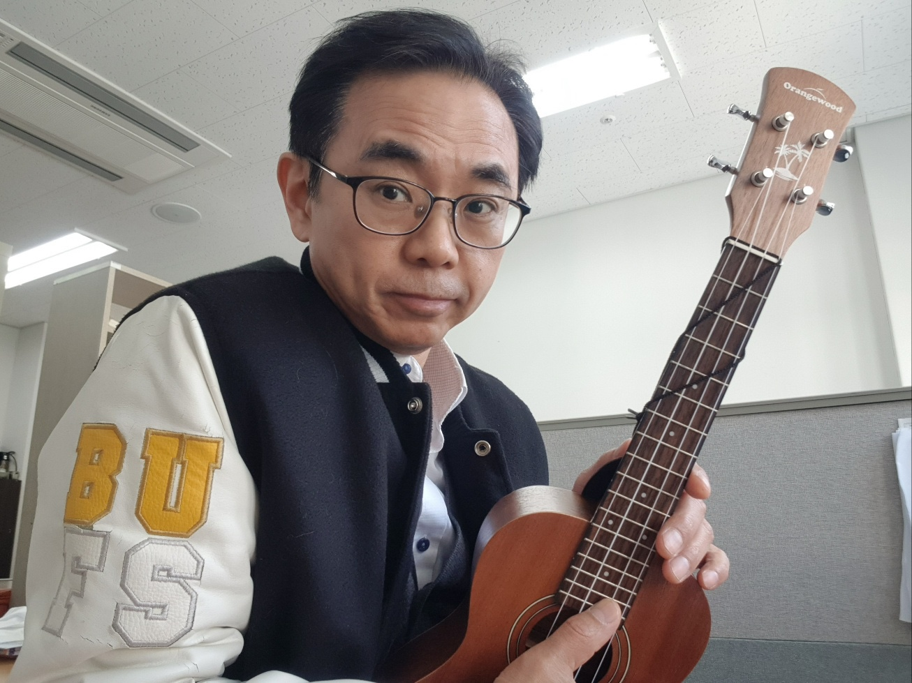

시바타 후미타케
|  | |
| 이름 | 시바타 후미타케 |
| 직업 | 부산외국어대학교 교수 |
| 국적 |  일본 일본 |
| 가족 | 배우자, 자녀4명 |
| 약력 | 일본 고마자와 대학 경영학부 졸업 한국 호남대학교 국어국문학과 대학원 석사 한국 전남대학교 국어국문학과 대학원 박사과정 종료 |
| 이메일 | fshibata1120@hanmail.net |
1. 개요

부산외국어대학교의 외국인 전임교수이자 일본어교수이다.
2. 생애
2.1 학창시절
중학교 2학년 때 친구가 아이스하키 클럽 팀을 같이하자고 했다.
아이스하키는 원래부터 했으니까 괜찮겠다 싶어서 시작했다.
남쪽 지역에서는 아이스하키 서클이 드물기 때문에 신문에도 나오곤 했다.
감독의 소개로 도쿄보다 북쪽으로 가면 강한 팀이 있으니까, 본격적으로 할 수 있겠다 싶어서 도쿄 사이타마 그 위에 토치키 현의 우츠노미야시라는 고등학교에 가게 되었다.
1학년일 때는 열심히 해 홋카이도에, 전국대회에 나간 적도 있다.
그래도 고등학생 때 후쿠오카에서 도치기현은 멀다 보니까 문화의 차이를 느꼈다.
처음엔 조금 고생했지만 친해졌다
지역마다의 분위기가 다르니까 일본에서도 지역마다 전혀 다름을 느꼈다.
고교 2학년 때까지 열심히 했는데 클럽이 폭력 사건으로 사라졌다.
1학년이 열심히 하지 않아 선배들이 조금 폭력을 썼다. 폭력이라는 문제보다는 한 명이 입원해 버려 문제가 커졌다. 그렇게 3학년 때는 전혀 하지 않게 되었다.
2.2 대학시절
대학 경영학부에 들어간 이유는 회사 경영 및 비즈니스가 되면 좋겠구나 해서 들어갔다.
수업을 열심히 들었지만, 수업이 너무 재미없었다. 회사의 경영이나 비즈니스가 아닌
경리의 방식이라던가 다른 부가적인 내용만 배우고 어떻게 비즈니스 하면 좋은지 같은 실무 정보가 전혀 없어서 재미없어서 아르바이트만 했다. 아르바이트는 여러 가지를했다.
아르바이트 종류가 파친코 고깃집 서류 고치기 등 여러 아르바이트를 했다.
그리고 대학생일 때 제일 재미있었던 것은, 여러 가지 아르바이트하면서 사장님과 선배와 친해지고, 고객하고도 커뮤니케이션하며 사회생활을 배울 수 있어서 정말 좋았다. 고깃집 할 때는 손님하고 즐겁게 말하는 연습을 했고, 제법 바라보이는 회사원이 1-2개월 되니 넥타이가 없어지는 등 빠칭코에서 도박에 빠져버린 사람들을 보며 역시 도박은 좋지 않구나 이렇게 되진 말아야지 하고 생각했다.
다른 것도 여럿 했지만 역시 선배나 사장님에게 사회생활을 배운 것이 좋았다.
3. 한국 생활
한국에는 1989년도에 갔다.
한 선배가 88올림픽 이후 한국을 갔다 와서 한국이 정말 좋다고 추천했다.
마침 회사에 다니고 있었는데 1년을 일했지만 이대로 유학도 가고 싶다고 생각했고, 여기서 이러고 있다가 그대로 아저씨가 될까 봐 도전해 봤다.
유학 와서 느낀 소감은 한국은 대단하고 열정이 느껴진다는 것이었다.
89년에 한국에 왔을 때, 사람들이 일본어를 잘 몰라 빨리 한국어를 외웠다.차별이나 심한 말을 한다던가 그런 사람들은 없었다.
한국에 적응할 수 있었던 습관은 처음 서울에 간 후에 빨리 말을 외우면서 여러 사람과 커뮤니케이션하기 위해 노력한 것이다.
3.1 대학원과 기간제 교수
고려대의 한국어학당에 들어가서 공부하고 대학원에서 공부하고 있으니 여러 곳에서 일본어를 알려달라고 연락이 왔다. 연락을 받고 대학이든 회사이든 일본어를 알려줄 기회가 많이 있겠다고 생각했다.
사실 일본에서 한국어 선생님을 생각하고 있었지만, 한국에서 일본어를 가르쳐 달라고 부탁받아서 일본어 선생님이 됐다.
그때는 대학에서 한창 일본어를 배우기 위해 일본인들 잔뜩 부르기도 했다.
친구의 추천을 받은 대학에서 시간 강사로 일하게 되었다.
하지만 전임된 지 2년 만에 커리큘럼이 바뀌어서 그만두게 되었다.
그만두자마자 아는 사람이 다른 학교를 알려주며 모집하고 있으니, 서류를 내보는 건 어떠냐 물어 도전했더니 합격했다.
이런 일련의 과정을 거치면서 역시 인간관계가 좋으면 여러 가지의 기회가 생기게 된다는 걸 느꼈다.
시간이 지나도 수업하던 학교와 계약이 끊겼지만 바로 다른 기회가 계속 생겼다.
4. 취미
대학 생활에 밴드를 했었다. 그 후로는 음악 활동을 하지 않았지만 10 몇 년 전에 기타를 다시 시작했고, 최근에는 시의 여러 행사가 있으면 참가한다든가 공연하곤 한다. 학교에서도 노래를 한국어로 소개해 주고 다 같이 불러보거나 한다. 노래를 좋아하는 학생들이 매일 참가 해주고 있다. 밴드 활동은 지금도 하고 있다. 한국인 사람들과 매주 금요일에 손님이 오면 공연하고 그게 아니면 연습하는 식으로 하고 있다. 작은 행사나 축제 같은 곳에 초청받아 공연하거나 하기도 한다.
한국과 일본의 차이는 일본은 개인주의적인 성향 강했지만, 한국은 가족을 소중히 하고 부모를 최우선으로 하는 분위기가 있었다. 근데 지금은 없어지고 많이 변했다고 생각한다.
계속 음악 활동하고 있기 때문에 앞으로도 계속 음악 활동을 하고 싶다.
자신의 인생/행복을 점수로 친다면 10점 만점에 8점 정도. 10점이 되지 못하는 건 아직 못한 일이 많기 때문이다. 물론 지금 인생이 끝나게 된다고 해도 후회는 없다. 하지만 아직 하고 싶은 일이나 할 수 있는 게 많기 때문에 남은 시간을 더 소중하게 사용하면서 보내고 싶다.
5. 자신의 행동타입
괜찮다고 생각하면 바로 시작하는 타입이다.
선택의 기준은 자신이 그것을 했을 때 즐거울지 어떨지다. 딱히 고민하지 않고 재미있어 보인가 싶으면 바로 뛰어든다. 즐거운지 보람을 느낄 수 있을지가 기준이다.일본어를 가르치는 것도 학생들을 가르치는 게 매우 즐겁고 학생의 실력이 늘거나 좋은 곳에 취직하거나 하는 좋은 일들이 있으면 기쁨을 느끼고 보람이 있기 때문에 하는 편이다.
잘못되면 잘못된 대로 다시 시작해서 잘못된 부분을 고쳐나가면 되는 거로 생각한다. 대학을 고를 때도 여기가 아니면 일본에 돌아가야 하므로 고를 만한 사정이 되진 않았다. 그래서 별로라거나 그런 고민은 하지 않았다. 일본에 취업하게 되면, 가족과 함께 일본에 바로 갈 수는 없기 때문에 혼자 먼저 가서 취업한 뒤 가족을 부르려 했다. 하지만 이 전에 고맙게도 누군가가 소개해 줬기 때문에 가지 않았다
6. 커리어
고려대 어학당 - 광주 대학(시간강사) - 광주여자대학교(초청 강사) 2년 - 가야대학교11년 - 신라대학교 4년
– 부산외국어대학교
한국드라마(지붕뚫고 하이킥 등) 출현, 슈퍼스타K 출연.
7. 성공하기 위해 중요한 것
성공을 위해선 많은 게 필요하겠지만 역시 인간관계가 가장 중요하다고 생각한다.
여러 사람을 소중하게 하면 여러 사람이 나를 도와준다.
후회하지 않도록 도전하는 것. 하고 싶다고 생각하는 순간 도전하는 것이 좋다.
중간에 포기한다고 해도 해왔던 시간이 있으니, 그만큼 성장했으니까 반드시 그 도전은 의미가 있다.
예를 들어 발표 대회라던가, 연극이라던가 이런 것에 도전하면, 하기 전과 하고 난 뒤 성장에 도움이 되기 때문에 하는 편이 좋다고 생각한다.
자신의 길은 자신이 정하긴 하지만 반드시 누군가가 도움을 줄 것이다. 물론 자신도 노력하는 것도 당연하지만, 사람을 중요시하는 게 가장 중요하다.
8. 조언
로마에 가면 로마의 법을 따라라. 한국이 좋은 것은 누구나 알지만 상대가 원하지 않는다면 강제로 정보를 주입하려고 하지 말고 상대를 먼저 존중해야 한다
만약 상대가 먼저 원한다면 너의 이야기를 하는 것이 맞다. 처음부터 뭔가 하려고 해도 잘 받아들여지지 않으니, 먼저 상대방을 존중한 뒤 질문을 하고 먼저 다가가는 것이 더 중요하다.
똑같은 생활을 반복하다가 늙어버리는 것보단 한 번쯤은 외국에 나가서 여러 가지를 체험해 보는 게 좋겠다고 생각한다.
9. 인생의 점수
자신의 인생/행복을 점수로 친다면 10점 만점에 8점 정도. 10점이 되지 못하는 건 아직 못한 일이 많기 때문이다.
물론 지금 인생이 끝나게 된다고 해도 후회는 없다. 하지만 아직 하고 싶은 일이나 할 수 있는 게 많기 때문에 남은 시간을 더 소중하게 사용하면서 보내고 싶다.
10. 어록
인생을 바꾸는 것은 만남이다.
남을 질투하지 않으며 사람에게 감사하며 살아가자
연락할 때나 만날 때 잘 대해주고 소중하게 여긴다면 후에도 도움을 받을 수 있을 것이다.
손이 닿은 사람 한 명 한 명을 소중히 해야 한다.
~인생의 모든것은 스테이지~
-by 시바타 후미타케-